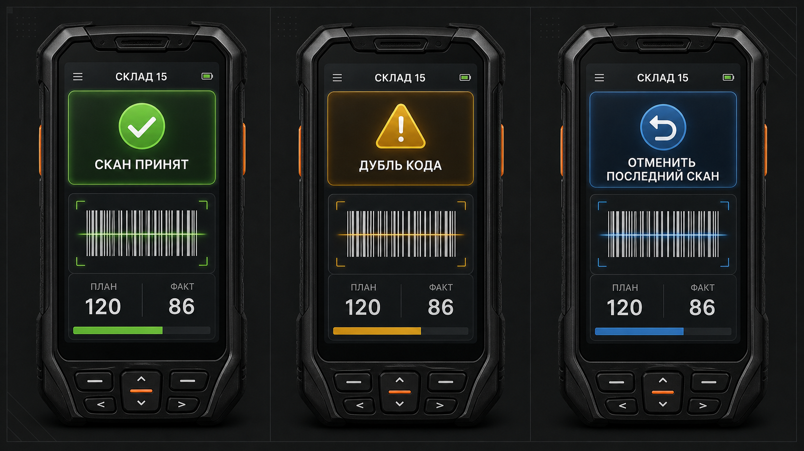
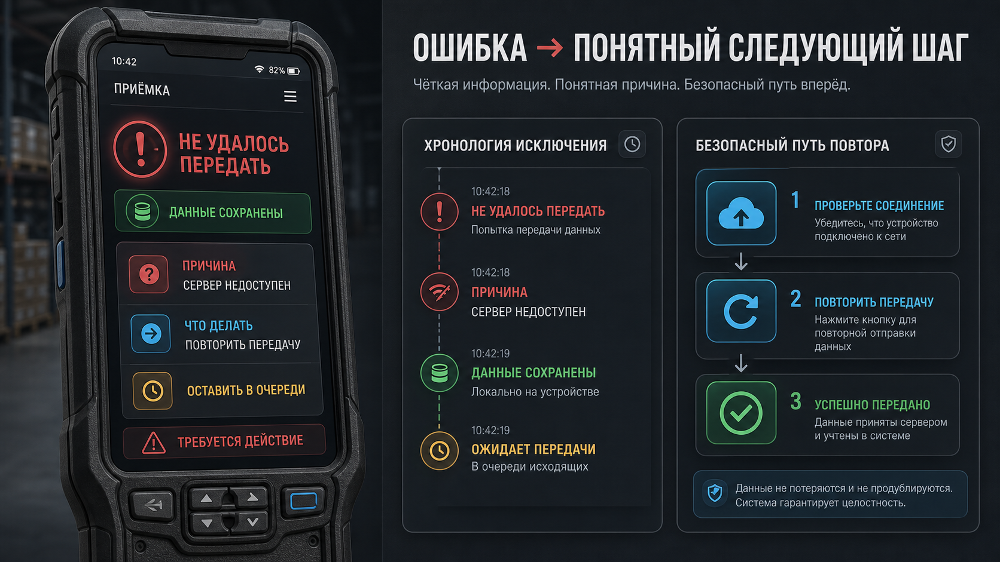

Кладовщик
Сканирует товар, марки и упаковки; должен быстро понять результат действия.
01 · Product UX · Клеверенс
Я разобрал не отдельный экран сканирования, а распределённый процесс: человек → терминал → сервер → 1С. Концепция сохраняет прогресс, делает исключение видимым и не даёт закрыть документ раньше времени.
 Скан принятЕсть исключениеПосле действия понятно, что сохранено и что делать дальше
Скан принятЕсть исключениеПосле действия понятно, что сохранено и что делать дальше01 — О проекте / контекст
«Склад 15» — WMS-контур для складских операций: приёмка, маркировка, транспортные упаковки и передача документов в 1С. Кладовщик работает в шуме, в перчатках и иногда без устойчивой связи. Поэтому цена неясного статуса — повторный скан, простой, расхождение или ручное вмешательство.
Сканирует товар, марки и упаковки; должен быстро понять результат действия.
Один документ проходит несколько состояний, которые нельзя смешивать в одну кнопку.
Документ выглядит завершённым, но данные не дошли или исключение осталось без владельца.
02 — Команда и роли
В доступных материалах зафиксирована моя роль и проектная работа. Реальный состав рабочей команды и проведённые совместные сессии не описаны, поэтому я не приписываю себе не подтверждённые активности.
Product / UX Engineer: анализ процесса, карта состояний, UX-концепция, макеты и план проверки.
Кладовщик, старший смены, оператор 1С, QA и интегратор. Их участие необходимо подтвердить интервью, наблюдением или артефактами команды.
03 — Определение проблемы
Проблема не в количестве экранов. Пользователь не должен помнить, в каком режиме работает документ, был ли скан сохранён, ушёл ли он на сервер и кто должен решить исключение.
Непонятно, добавит ли действие количество, создаст дубль или отменит предыдущий результат.
ТСД, сервер и 1С имеют разные точки подтверждения — их нужно показать отдельно.
Неизвестный штрихкод, отсутствие марки или ошибка передачи требуют статуса, причины и владельца.
04 — Исследование и доказательства
Полевые интервью и аналитический baseline в исходных материалах не зафиксированы. Основа кейса — публичная документация Cleverence, описания сценариев и системное моделирование. Это достаточно для framing, но недостаточно для заявления об эффекте.

«Я не начинал с экранов. Сначала нужно понять, где теряется уверенность: после скана, при передаче или в момент завершения».
Авторская формулировка проблемы, не цитата пользователя
05 — Метрики успеха
Ниже — показатели для пилота. Числового baseline и измеренного эффекта в материалах нет, поэтому цифры не выдаются за результат.
06 — Гипотезы и приоритеты
Приоритет — экспертная оценка до пилота, а не измеренная частота.
07 — Интервью / валидация
Целевая выборка: 2–3 кладовщика, 1–2 старших смены, оператор 1С и QA/интегратор. Искать через один склад или клиента, где есть различия по маркировке и online/offline.
08 — Количественные данные
Открытая документация описывает правила, но не даёт частоту ошибок на конкретном складе. Репрезентативный опрос без базы пользователей был бы декоративным, поэтому вместо него нужен baseline из логов и документов.
Зафиксировать версию, устройство, смену, режим связи и размер документа.
Отдельно сравнить новичков/опытных, модели ТСД, online/offline и тип товара.
Так можно написать только после реального пилота с единым document ID.
09 — User Flow
Внутри потока видны и пользовательские действия, и системные состояния.
10 — Решения и макеты
Это концептуальные макеты. Они показывают логику и состояния, а не скриншоты внедрённого продукта.
«Скан принят», дубль и отмена последнего действия имеют разные состояния. Штатный путь не требует лишнего подтверждения.

Число получает контекст: 10 коробов × 12 штук, факт и остаток. Арифметика не остаётся в голове оператора.

Локальное сохранение, отправка на сервер, загрузка и принятие в 1С — отдельные проверяемые состояния.

Сообщение отвечает на четыре вопроса: что случилось, что сохранено, что сделать и когда нужна помощь.

11 — UX-тесты
План: 6 участников — 3 кладовщика, 1 старший смены, оператор 1С и QA/интегратор. Набор через реальный склад; мотивация — рабочее время и обратная связь, без подмены результата подарком.
12 — Итоговое решение
Я собрал концепцию ScanFlow, QuantityState, DocumentLifecycle и ErrorHint, связал их с центром исключений и правилами передачи в 1С.
13 — План проверки / пилот
Пилот нужен, чтобы проверить не только понимание интерфейса, но и изменение операционного поведения.
Разобрать реальные приёмки и исключения, собрать baseline минимум по 100 сопоставимым документам.
Провести прототипный тест на 6 участниках, закрыть критические ошибки понимания.
Ограниченная группа устройств, сопоставимый период или контрольная группа, две недели нагрузки.
Сравнить TSR, повторные сканы, неполные документы, время разбора и ошибки передачи; отдельно median/p90.
14 — Выводы
Я связал интерфейс с состояниями документа, ролями и передачей в 1С. Ограничение кейса — отсутствие полевых интервью, baseline и реального внедрения. Поэтому снижение ошибок и времени не заявляю.
У каждого важного отклонения есть понятное состояние и следующий шаг.
В scan-intensive продуктах продуктовая ценность живёт в событиях, статусах и восстановлении.
Добавить реальные голоса кладовщиков, архивный before и доказанный эффект пилота.
Вывод для продукта